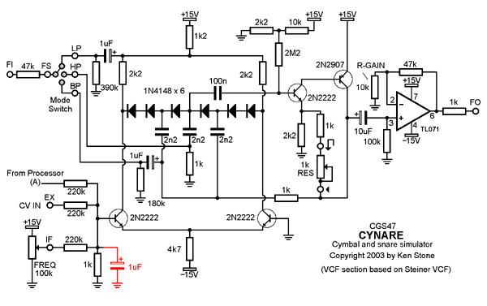
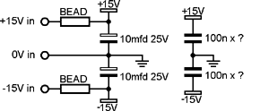

|
The Cynare drum simulator is the third in the series of CGS drum simulators. It generates a single drum sound that can be adjusted to sound like a cymbal, hi-hat, snare drum, electronic drum, or numerous other percussive sounds. It is a complete dedicated synthesizer in its own right, including six oscillators, a noise source, a mixer, an envelope generator, a VCF and a VCA. Some ideas on how to use this module: There are two inputs for controlling the envelope of the generated sound. The first is Decay. Attack is preset at the fastest rate possible, the decay controlling the fall off rate of the envelope. This decay is also affected by the Damper control, which operates in parallel with the Decay. A gate input into the Sustain jack disables the damper, thus allowing two different rates of decay to be set depending on the input to the sustain jack. Note: if the damper decay rate is set to minimum, and the sustain input is below about 2V, the envelope will be set at minimum, with the decay control having very little effect, so if you do not wish to use the sustain input, the damper decay rate should be turned to maximum. If a square wave or similar gate waveform is connected to both the sustain and trigger inputs, the fall-off of the envelope will be affected by the decay control while the gate signal remains high, the damper kicking in as soon as the gate falls low. This allows for easy implementation of open/closed hi-hat sounds etc. A little on how it works:
The schematic of the core of the Cynare drum simulator. TL072 "A" processes the incoming trigger and sustain signals. The trigger is converted to a short pulse, while the sustain input becomes a gate signal. The trigger pulse will charge the 2u2 envelope capacitor. The capacitor will then discharge through the decay pot, and if the sustain gate signal is low, thought the damper pot as well. The resultant envelope is passed through a voltage divider and LED to drive pin 5 of the LM3080 which forms the heart of the VCA. The envelope is also passed through a processor that allows it to be scaled, and inverted, giving a range of positive and negative going envelopes to drive the VCF. There are two noise generators, a conventional reverse biased emitter-base junction, and a "shimmer" generator consisting of six independent oscillators with their outputs "ring" modulated via the exclusive OR gates, and mixed. A pot allows the ratio of noise to shimmer to be adjusted. A filtered version of the trigger pulse is used to generate an impact sound, and this is mixed with the output of the shimmer/noise section. The filter section is directly taken from the Steiner VCF. All of these sections form a small dedicated synthesizer, when wired in the appropriate order.


Construction
The component overlay. Connections can be determined from the circuit diagram. This is one of those PCBs than can be assembled in a number of different ways to suit the builder's panel space or "maximum knobs" requirements. The first wiring diagram below gives basic wiring details. A three position rotary switch is used to select the filter mode. Both the filter and VCA are supplied with individual inputs and outputs, meaning that the module MUST be patched to run. Alternately, the mix out (MO) could be hard wired to the VCA in (VCAI). The VCA out (VCAO) hard wired to the filter in (FI) and the filter out (FO) wired to the module output socket. The VCF is place after the VCA so when the VCF resonance is set just short of self oscillation, the VCF can be used as a drum sound. Wiring the VCF before the VCA is an equally legitimate option, thus the suggested multiple sockets. On my module, I used a switch to change the order of the VCA and VCF, elimination the extra sockets. This has the advantage of using less panel space and not needing external patching, but also prevents external signals being processed by the VCF or VCA. An external CV input can be added to the VCF, but is permanently coupled to the internal envelope generator as well, though the effect of the internal envelope generator can reduced to near zero. The VCA has no external controls. The Noise output is optional - merely a convenient white noise source for general use. R1 to R6 are non-critical values, and give the shimmer its desired tone. For example, you could use 47k, 100k, 220k, 330k, 390k, and 470k. This is where experimentation will give each module a unique sound. Alternately, you can use pots. One the PCB, each of these resistors has two spare pads under it. Start by inserting 6 x 10k resistors, each standing on end, into the two holed under each resistor nearest the 40106. Run wires from the two other holes under each resistor to a panel mounted 500k linear pot (to the center and clockwise connections). This will give you six pots with which to adjust the shimmer effect. Other values could also be used - for example, if you use 1M pots, decrease the associated 10n capacitors to 4n7. If you wish to add a level control to the impact sound, delete the associated 22k resistor. Cut the track between the two pads marked "IL". Run a wire from the "IL" pad connected to the 1n capacitor to the clockwise end of a 22k pot (or 20k, 25k etc.). Run a wire from the other "IL" pad to the wiper of the pot. Connect the counter-clockwise end to 0V/GND. Before you start assembly, check the board for etching faults. Look for any shorts between tracks, or open circuits due to over etching. Take this opportunity to sand the edges of the board if needed, removing any splinters or rough edges. When you are happy with the printed circuit board, construction can proceed as normal, starting with the resistors first, followed by the IC socket if used, then moving onto the taller components. Take particular care with the orientation of the polarized components such as electrolytics, diodes, transistors and ICs. When inserting ICs into sockets, take care not to accidentally bend any of the pins under the chip. Also, make sure the notch on the chip is aligned with the notch marked on the PCB overlay.
Basic wiring of the Cynare. Point "A" can be joined for automatic coupling of the sustain and trigger functions. The LED MUST be installed. If it is not wanted on the front panel, mount it directly on the PCB.
How to wire a 3 pole 2 position toggle switch to change the order of the VCA and VCF. This is used instead of the extra sockets. Each PCB connection is shown. OUT goes directly to the output socket. Notes:
Parts list This is a guide only. Parts needed will vary with individual constructor's needs. If anyone is interested in buying these boards, please check the PCBs for Sale page to see if I have any in stock.
Can't find the parts? See the parts FAQ to see if I've already answered the question. Also see the CGS Synth discussion group.
Article, art & design copyright 2001 by Ken Stone
| ||||||||||||||||||||||||||||||||||||||||||||||||||||||||||||||||||||||||||||||||||||||||||||